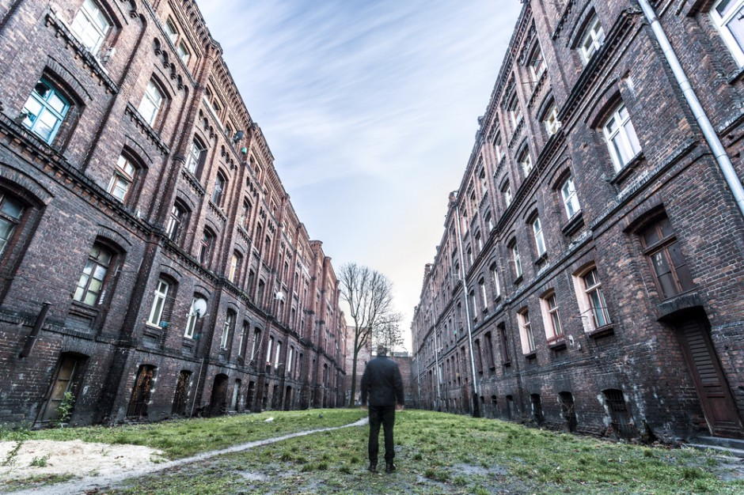
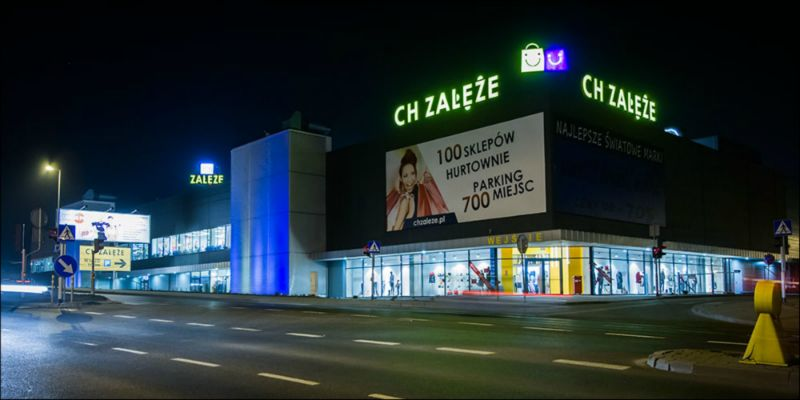

Załęże


Załęże to jedna z dzielnic miasta Katowice, położona w północno-zachodniej części miasta. Zajmuje powierzchnię ok. 3,4 km² i liczy około 12 000 mieszkańców.
Dzielnica ma silnie ukształtowany przemysłowy charakter, rozwój Załęża łączył się z hutnictwem, górnictwem oraz zakładami maszynowymi. Załęże zostało włączone do Katowic administracyjnie w 1924 roku.
Mimo niewielkiej powierzchni dzielnica ma relatywnie dużą długość w jednym kierunku — jej obszar to prostokąt o bokach około 4 km × 0,6 km.W dzielnicy działały m.in. zakłady produkcyjne: dla przykładu „Fabryka Maszyn Górniczych MOJ” (założona w 1913 r.).
Sport i kultura fizyczna mają tam długą historię — od końca XIX w. działały m.in. bractwa strzeleckie, tor kręglarski, stowarzyszenia typu „Towarzystwo Gimnastyczne Sokół”.
Załęże zostało wskazane w jednym plebiscycie jako „najmniej bezpieczna dzielnica” na Śląsku i w Zagłębiu — co może być stereotypem, ale pokazuje pewne wyzwania tej części miasta.
Mimo przemysłowych korzeni, w północnej części dzielnicy znajdują się też fragmenty zabudowy mieszkalnej i mniej intensywnej – co może być plusem dla osób szukających lokalizacji blisko centrum, ale z pewnym oddaleniem od głównych arterii. Do centrum Katowic komunikacja jest relatywnie dobra, co czyni Załęże opcją wartą rozważenia także pod kątem mieszkania.
Przy wyborze mieszkania warto sprawdzić dokładną lokalizację w Załężu – część części dzielnicy może być bardziej obciążona hałasem, ruchem czy starszą zabudową.